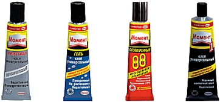

- Новости
- / Контакты
В производстве мягкой мебели на сегодняшний день клей используется очень широко – он нужен для соединения между собой поролонов и поролона с деревом, искусственной и натуральной кожей, пластиком, обивочной тканью. Основными требованиями к мебельному клею являются хорошая начальная схватываемость, высокая эластичность клеевого шва, его прочность и долговечность. Кристаллизоваться и рассыпаться под воздействием высоких температур клей ни в коем случае не должен.
Чаще всего в производстве мягкой мебели применяются контактные виды клеев. Контактный клей состоит из легколетучего растворителя и синтетического каучука – растворитель после нанесения быстро испаряется, а полимер затвердевает, обеспечивая тем самым прочное соединение. В клей часто добавляются и другие компоненты, влияющие на его характеристики. Обратите внимание, что каждая марка клея имеет свои конкретные характеристики, определяющие ее своеобразие – это сухой остаток, вязкость и открытое время.
Жесткий пластик типа HPL может наклеиваться на шлифованное ДСП и затем прижиматься после склеивания ручным способом. Мягкие пластики типа полистирола желательно наклеивать на только ламинированное ДСП. Жидкие фракции клея, когда проникают внутрь шлифованного ДСП, могут вызывать незначительные деформации поверхности, что приводит после наклеивания мягкого пластика к искривлениям его поверхности. Пластик HPL не такой требовательный к характеру ДСП, используемому в качестве подложки, а ламинированное ДСП, в отличие от шлифованного, требует обязательного предварительного шлифования поверхности ламината с целью обеспечения лучшего схватывания клея с подложкой. Контактный клей имеет моментальное действие, поэтому при работе с ним нужна большая точность – в вопросе соединения клея и ДСП у вас второй попытки уже не будет. Следует также помнить, что контактный клей выпускается в основном красного цвета, из-за чего при оклеивании поверхностей светлым пластиком под углом 90 градусов на стыке может появляться красная полоска красного.